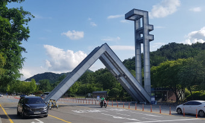

수시를 준비하는 학생과 학부모님께 가장 먼저 필요한 것은 지원하려는 대학의 전형 구조를 정확히 아는 것입니다. 오늘은 최상위권 학생들이 목표로 삼는 서울대학교의 수시 전형과 대표 학과, 그리고 이번 수시를 어떻게 준비하면 좋은지 정리했습니다.
서울대 수시, 어떤 전형이 있나요
서울대학교 수시는 크게 지역균형전형과 일반전형 두 가지로 나뉩니다. 다른 상위권 대학과 달리 서울대는 논술전형을 실시하지 않습니다. 그래서 수시는 철저히 학교생활기록부(내신·세특)와 면접으로 승부가 갈립니다.
- 지역균형전형 — 소속 고등학교의 학교장 추천을 받아야 지원할 수 있는 전형입니다. 내신 교과 성적이 기본이 되며, 학교생활기록부 서류평가와 면접을 함께 반영하고 수능최저학력기준이 적용됩니다. 학교 내신이 최상위인 학생에게 유리합니다.
- 일반전형 — 서울대 수시의 중심인 학생부종합전형입니다. 1단계에서 학생부 서류평가로 일정 배수를 선발하고, 2단계에서 서류평가와 면접·구술고사로 최종 선발합니다. 자연계열은 수학·과학 중심의 심층 구술, 인문계열은 제시문 기반 면접이 치러집니다. 대체로 수능최저는 적용되지 않습니다(모집단위에 따라 다름).
- 실기 포함 모집단위 — 미술대학·음악대학·사범대학 체육교육과 등은 실기·교직적성이 함께 반영됩니다.
정리하면 내신이 최상위이면 지역균형, 내신과 세특·탐구가 두루 강하면 일반전형으로 방향을 잡는 것이 기본입니다. 흔히 말하는 "서울대 수시등급"의 합격선은 전형·모집단위별로 크게 다르므로, 반드시 당해 연도 입시결과(입결)를 확인해야 합니다.
서울대 대표 학과·모집단위 (키워드)
서울대는 관악 주캠퍼스와 연건캠퍼스(의학 계열) 등으로 구성된 종합대학입니다. 대표 모집단위는 다음과 같습니다.
- 인문·사회 계열 — 인문대학(국어국문·영어영문·중어중문·불어불문·독어독문·언어학·역사학부·고고미술사학·철학·미학·종교학), 사회과학대학(정치외교학부·경제학부·사회학과·인류학과·심리학과·지리학과·사회복지학과·언론정보학과), 경영대학(경영학과)
- 자연·이과 계열 — 자연과학대학(수리과학부·통계학과·물리천문학부·화학부·생명과학부·지구환경과학부), 공과대학(전기정보공학부·컴퓨터공학부·기계공학부·화학생물공학부·재료공학부·건설환경공학부·건축학과·산업공학과·항공우주공학과·원자핵공학과·조선해양공학과·에너지자원공학과)
- 의약학 계열 — 의예과, 치의학, 수의예과, 약학계열, 간호대학
- 기타 — 농업생명과학대학, 생활과학대학(소비자아동·식품영양·의류), 사범대학(교육학과·국어교육·수학교육 등), 자유전공학부, 첨단융합학부
지원 모집단위에 따라 요구되는 교과 이수와 세특 방향이 다릅니다. 공학·자연 계열은 수학·과학 심화가, 인문·사회 계열은 독서·탐구·언어 역량이 특히 중요합니다.
이번 수시, 서울대는 이렇게 준비하세요
서울대 수시를 목표로 한다면 아래 순서로 전략을 세우는 것을 권합니다.
- 1) 내신과 세특의 완성도부터 — 지역균형·일반전형 모두 학교생활기록부의 학업역량과 탐구 과정이 핵심입니다. 지금 내 위치에서 어느 전형이 현실적인지 먼저 정합니다.
- 2) 면접·구술 대비 — 일반전형 2단계 면접·구술의 비중이 큽니다. 자연계는 수학·과학 개념을 자기 말로 설명하는 심층 구술, 인문계는 제시문을 논리적으로 해석하는 연습이 필요합니다.
- 3) 지역균형은 수능최저 관리 — 최저 충족이 합격을 좌우하는 경우가 많습니다. 최저 과목을 방학 동안 집중 관리하세요.
- 4) 진로와 이어지는 탐구 정리 — "무엇을 했는가"보다 "왜, 어떻게 배웠는가"가 중요합니다. 지원 계열과 연결되는 탐구·독서·활동을 정리해 두세요.
서울대는 어떤 학교인가요
서울대학교는 대한민국을 대표하는 국립 종합대학으로, 인문·사회·자연·공학·의약학·예술·체육 전 분야에 걸쳐 폭넓은 학문 체계를 갖추고 있습니다. 관악 주캠퍼스를 중심으로 연구 중심 대학의 성격이 강하며, 깊이 있는 탐구와 자기주도적 학습 역량을 갖춘 학생을 선호합니다. 그만큼 내 진로와 강점에 맞는 모집단위 선택이 합격의 관건입니다.
※ 모집 인원·수능최저·전형 일정 등 세부 사항은 해마다 달라질 수 있습니다. 지원 전 반드시 서울대학교 입학본부 모집요강에서 최종 확인하세요. 본 글은 학부모·학생의 이해를 돕기 위한 정리 자료입니다.